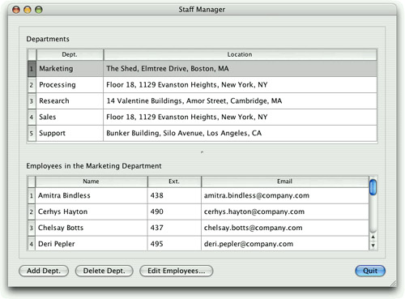

|
|
In many cases, it is simplest to present users with a tabular view of a data set. In this section, we will present the Staff Manager application's main form, which consists of two QTableViews in a master–detail relationship. (The form is shown in Figure 13.4.) The master view is a list of departments. The detail view is a list of employees in the current department. Both views use QSqlRelationalTableModels, since both of the database tables they are presenting have foreign key fields. The relevant CREATE TABLE statements are shown on page 324.

As usual, we use an enum to give meaningful names to the column indexes:
enum {
Department_Id = 0,
Department_Name = 1,
Department_LocationId = 2
};
We will begin by looking at the MainForm class definition in the header file:
class MainForm : public QWidget
{
Q_OBJECT
public:
MainForm();
private slots:
void updateEmployeeView();
void addDepartment();
void deleteDepartment();
void editEmployees();
private:
void createDepartmentPanel();
void createEmployeePanel();
QSqlRelationalTableModel *departmentModel;
QSqlRelationalTableModel *employeeModel;
QWidget *departmentPanel;
...
QDialogButtonBox *buttonBox;
};
To set up a master–detail relationship, we must make sure that when the user navigates to a different record (row), we update the detail table to show only the relevant records. This is achieved by the private updateEmployeeView() slot. The other three slots do what their names indicate, and the two private functions are helpers for the constructor.
Most of the constructor's code is concerned with creating the user interface, and setting up suitable signal–slot connections. We will focus on those parts that are relevant to database programming.
MainForm::MainForm()
{
createDepartmentPanel();
createEmployeePanel();
The constructor begins by calling two helper functions. The first creates and sets up the department model and view, and the second does the same for the employee model and view. We will look at the relevant parts of these functions after we have finished looking at the constructor.
The next part of the constructor sets up a splitter that contains the two table views, and also sets up the form's buttons. We will skip all this.
...
connect(addButton, SIGNAL(clicked()), this, SLOT(addDepartment()));
connect(deleteButton, SIGNAL(clicked()),
this, SLOT(deleteDepartment()));
connect(editButton, SIGNAL(clicked()), this, SLOT(editEmployees()));
connect(quitButton, SIGNAL(clicked()), this, SLOT(close()));
...
departmentView->setCurrentIndex(departmentModel->index(0, 0));
}
We connect the buttons to slots in the dialog, and we make sure that the first department is the current item.
Now that we have seen the constructor, we will look at the code in the createDepartmentPanel() helper function that sets up the department model and view:
void MainForm::createDepartmentPanel()
{
departmentPanel = new QWidget;
departmentModel = new QSqlRelationalTableModel(this);
departmentModel->setTable("department");
departmentModel->setRelation(Department_LocationId,
QSqlRelation("location", "id", "name"));
departmentModel->setSort(Department_Name, Qt::AscendingOrder);
departmentModel->setHeaderData(Department_Name, Qt::Horizontal,
tr("Dept."));
departmentModel->setHeaderData(Department_LocationId,
Qt::Horizontal, tr("Location"));
departmentModel->select();
departmentView = new QTableView;
departmentView->setModel(departmentModel);
departmentView->setItemDelegate(new QSqlRelationalDelegate(this));
departmentView->setSelectionMode(
QAbstractItemView::SingleSelection);
departmentView->setSelectionBehavior(QAbstractItemView::SelectRows);
departmentView->setColumnHidden(Department_Id, true);
departmentView->resizeColumnsToContents();
departmentView->horizontalHeader()->setStretchLastSection(true);
departmentLabel = new QLabel(tr("Depar&tments"));
departmentLabel->setBuddy(departmentView);
connect(departmentView->selectionModel(),
SIGNAL(currentRowChanged(const QModelIndex &,
const QModelIndex &)),
this, SLOT(updateEmployeeView()));
...
}
The code begins in a similar way to what we saw in the previous section when we set up a model for the employee table. The view is a standard QTableView, but because we have a foreign key, we must use a QSqlRelationalDelegate so that the foreign key's text appears in the view and can be changed by a combobox, instead of the raw ID.
We have chosen to hide the department's ID field since this is not meaningful to the user. We also stretch the last visible field, the department's address, to fill the horizontal space available.
The department view has its selection mode set to QAbstractItemView::SingleSelection, and its selection behavior set to QAbstractItemView::SelectRows. The mode setting means that users can navigate to individual cells in the table, and the behavior setting means that as the user navigates, entire rows are highlighted.
We connect the currentRowChanged() signal from the view's selection model to the updateEmployeeView() slot. This connection is what makes the master–detail relationship work, and ensures that the employee view always shows the employees for the highlighted department in the department view.
The code inside the createEmployeePanel() helper function is similar, but with some important differences:
void MainForm::createEmployeePanel()
{
employeePanel = new QWidget;
employeeModel = new QSqlRelationalTableModel(this);
employeeModel->setTable("employee");
employeeModel->setRelation(Employee_DepartmentId,
QSqlRelation("department", "id", "name"));
employeeModel->setSort(Employee_Name, Qt::AscendingOrder);
employeeModel->setHeaderData(Employee_Name, Qt::Horizontal,
tr("Name"));
employeeModel->setHeaderData(Employee_Extension, Qt::Horizontal,
tr("Ext."));
employeeModel->setHeaderData(Employee_Email, Qt::Horizontal,
tr("Email"));
employeeView = new QTableView;
employeeView->setModel(employeeModel);
employeeView->setSelectionMode(QAbstractItemView::SingleSelection);
employeeView->setSelectionBehavior(QAbstractItemView::SelectRows);
employeeView->setEditTriggers(QAbstractItemView::NoEditTriggers);
employeeView->horizontalHeader()->setStretchLastSection(true);
employeeView->setColumnHidden(Employee_Id, true);
employeeView->setColumnHidden(Employee_DepartmentId, true);
employeeView->setColumnHidden(Employee_StartDate, true);
employeeLabel = new QLabel(tr("E&mployees"));
employeeLabel->setBuddy(employeeView);
...
}
The employee view's edit triggers are set to QAbstractItemView::NoEditTriggers, effectively making the view read-only. In this application, the user can add, edit, and delete employee records by clicking Edit Employees, which invokes the EmployeeForm developed in the previous section.
This time, we hide three columns, not just one. We hide the id column, because again that is not meaningful to the user. We also hide the departmentid column because the only employees shown at any one time are those that are in the currently selected department. Finally, we hide the startdate column because it is rarely relevant and can be accessed by clicking Edit Employees.
void MainForm::updateEmployeeView()
{
QModelIndex index = departmentView->currentIndex();
if (index.isValid()) {
QSqlRecord record = departmentModel->record(index.row());
int id = record.value("id").toInt();
employeeModel->setFilter(QString("departmentid = %1").arg(id));
employeeLabel->setText(tr("E&mployees in the %1 Department")
.arg(record.value("name").toString()));
} else {
employeeModel->setFilter("departmentid = -1");
employeeLabel->setText(tr("E&mployees"));
}
employeeModel->select();
employeeView->horizontalHeader()->setVisible(
employeeModel->rowCount() > 0);
}
Whenever the current department changes (including at startup), this slot is called. If there is a valid current department, the function retrieves the department's ID and sets a filter on the employee model. This constrains the employees shown to those with a matching department ID foreign key. (A filter is just a WHERE clause without the WHERE keyword.) We also update the label that is shown above the employee table to show the name of the department the employees are in.
If there is no valid department (e.g., if the database is empty), we set the filter to match a non-existent department ID to ensure that no records match.
We then call select() on the model to apply the filter. This in turn will emit signals that the view will respond to by updating itself. Finally, we show or hide the employee table's column headers depending on whether or not any employees are shown.
void MainForm::addDepartment()
{
int row = departmentModel->rowCount();
departmentModel->insertRow(row);
QModelIndex index = departmentModel->index(row, Department_Name);
departmentView->setCurrentIndex(index);
departmentView->edit(index);
}
If the user clicks the Add Dept. button, we insert a new row at the end of the department table, make this row the current row, and initiate editing of the department name column as though the user had pressed F2 or double-clicked it. If we needed to provide some default values, we would do so by calling setData() immediately after the insertRow() call.
We have not had to concern ourselves with creating unique keys for new records because we have used an auto-incrementing column to handle this for us. If this approach is not possible or not suitable, we can connect to the model's beforeInsert() signal. This is emitted after the user's edits, just before the insertion takes place in the database. This is the ideal time to put in IDs or to process the user's data. There are similar beforeDelete() and beforeUpdate() signals; these are useful for creating audit trails.
void MainForm::deleteDepartment()
{
QModelIndex index = departmentView->currentIndex();
if (!index.isValid())
return;
QSqlDatabase::database().transaction();
QSqlRecord record = departmentModel->record(index.row());
int id = record.value(Department_Id).toInt();
int numEmployees = 0;
QSqlQuery query(QString("SELECT COUNT(*) FROM employee "
"WHERE departmentid = %1").arg(id));
if (query.next())
numEmployees = query.value(0).toInt();
if (numEmployees > 0) {
int r = QMessageBox::warning(this, tr("Delete Department"),
tr("Delete %1 and all its employees?")
.arg(record.value(Department_Name).toString()),
QMessageBox::Yes | QMessageBox::No);
if (r == QMessageBox::No) {
QSqlDatabase::database().rollback();
return;
}
query.exec(QString("DELETE FROM employee "
"WHERE departmentid = %1").arg(id));
}
departmentModel->removeRow(index.row());
departmentModel->submitAll();
QSqlDatabase::database().commit();
updateEmployeeView();
departmentView->setFocus();
}
If the user wants to delete a department, we let them do so without formality if the department has no employees. But if it has employees, we ask the user to confirm the deletion, and if they confirm, we do a cascading delete to ensure that the database's relational integrity is maintained. To achieve this, at least for databases such as SQLite 3 which don't enforce relational integrity for us, we must use a transaction.
Once the transaction has been initiated, we execute a query to find out how many employees are in the department. If there is at least one, we pop up a message box asking for confirmation. If the user says no, we roll back the transaction and return. Otherwise, we delete all the department's employees as well as the department itself, and we commit the transaction.
void MainForm::editEmployees()
{
int employeeId = -1;
QModelIndex index = employeeView->currentIndex();
if (index.isValid()) {
QSqlRecord record = employeeModel->record(index.row());
employeeId = record.value(Employee_Id).toInt();
}
EmployeeForm form(employeeId, this);
form.exec();
updateEmployeeView();
}
The editEmployees() slot is invoked whenever the user clicks the Edit Employees button. We begin by assigning an invalid employee ID. Then we overwrite this with the current employee's ID if possible. Then we construct the EmployeeForm and show it modally. Finally, we call the updateEmployeeView() slot to make the main form's detail table view refresh itself since changes to employees may have occurred.
This chapter showed that Qt's model/view classes make viewing and editing data in SQL databases as easy as possible. In situations where we want to present records using a form view, we can use QDataWidgetMapper to map widgets in the user interface to the fields in a record in the database. Setting up master–detail relationships is quite easy, requiring just one signal–slot connection and the implementation of one simple slot. Drill-down is also straightforward, just requiring us to navigate to the selected record in the drilled-down form's constructor, or to go to the first record if no record is selected.
|
|
| Converted from CHM to HTML with chm2web Pro 2.85 (unicode) |